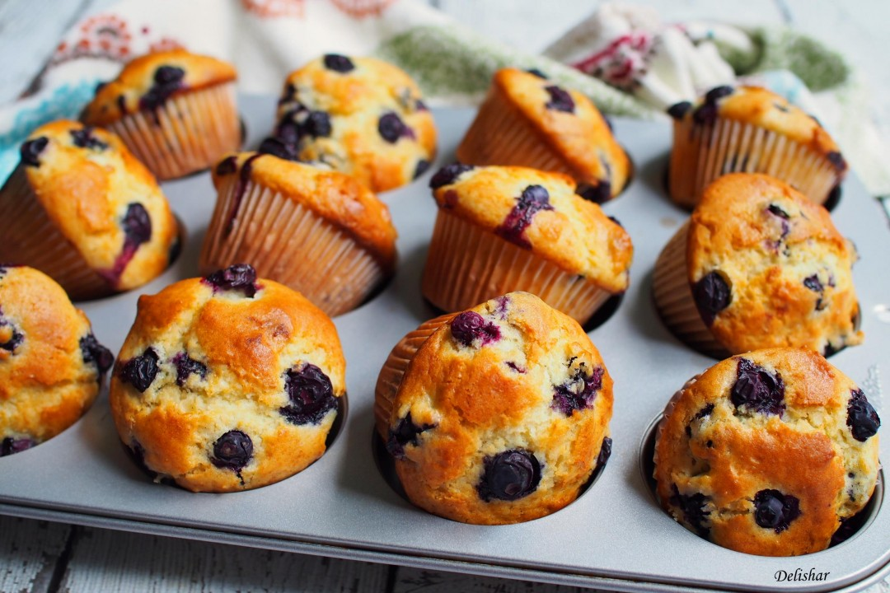

Patisserie Trio
-
Home (current)
-
About
-
Recipes
Blueberry Muffins
Blueberry Muffins

Ingredients
- 100g unsalted butter softened, plus 1 tbsp, melted, for greasing
- 140g golden caster sugar
- 2 large eggs
- 140g natural yogurt
- 1 tsp vanilla extract
- 2 tbsp milk
- 250g plain flour
- 2 tsp baking powder
- 1 tsp bicarbonate of soda
- 125g pack blueberries (or use frozen)
Method
- Heat oven to 200C/180C fan/gas 6 and line a 12-hole muffin tin with paper cases. Beat the butter and caster sugar together until pale and fluffy. Add the eggs and beat in for 1 min, then mix in the yogurt, vanilla extract and milk.
- Combine the flour, baking powder and bicarb in a bowl with 1/4 tsp fine salt, then tip this into the wet ingredients and stir in. Finally, fold in the blueberries and divide the mixture between the muffin cases.
- Bake for 5 mins, then reduce oven to 180C/160C fan/gas 4 and bake for 15-18 mins more until risen and golden, and a cocktail stick inserted into the centre comes out clean.
- Cool in the tin for 10 mins, then carefully lift out onto a wire rack to finish cooling. Will keep for 3-4 days in an airtight container – after a day or two, pop them in the microwave for 10-15 secs on high to freshen up.